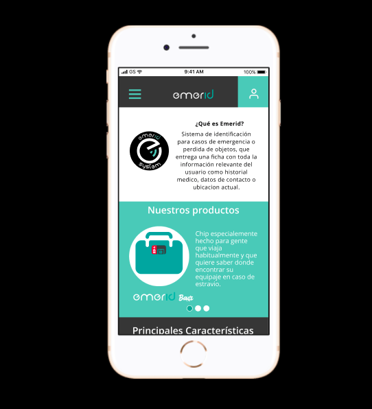
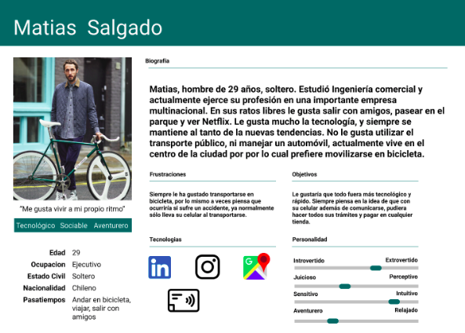
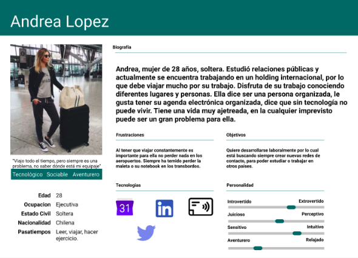
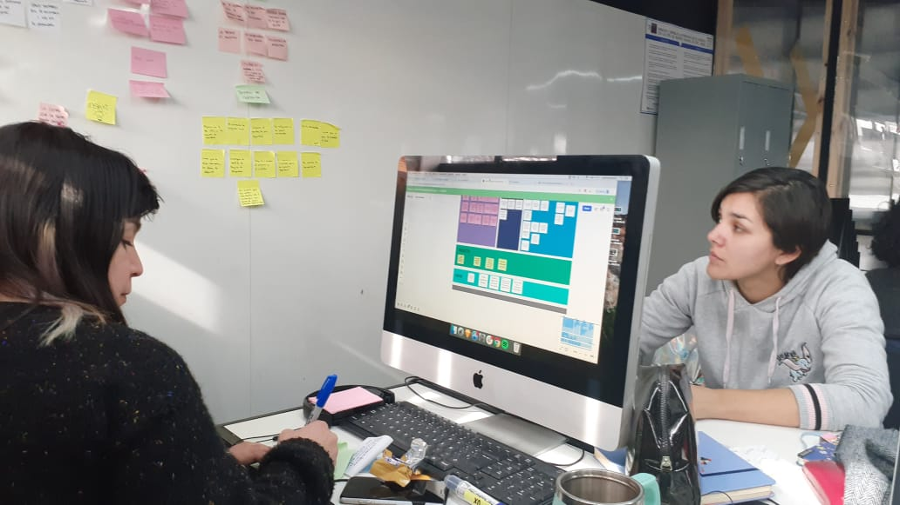
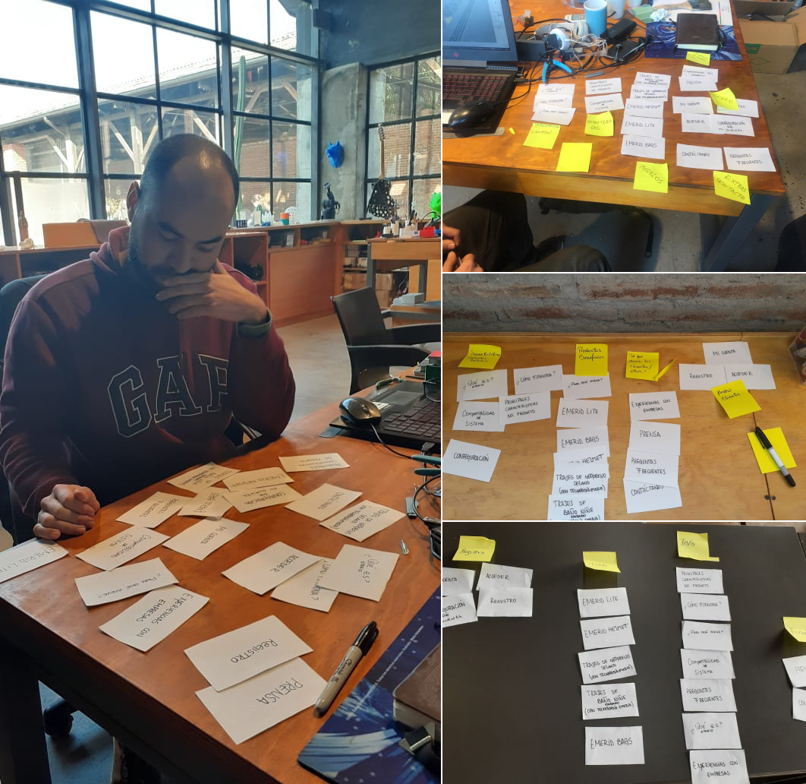
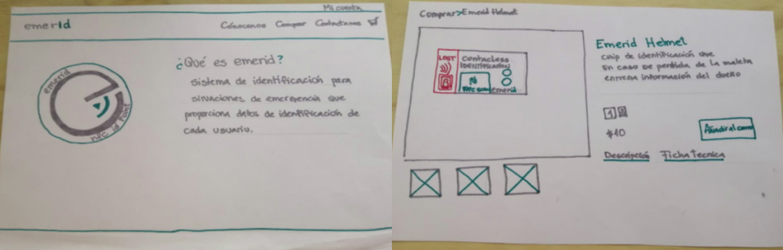

Emerid system, tecnología que entrega información de emergencia con solo acercar tu celular.

Emerid es un emprendimiento que tuvo sus orígenes en españa y que actualmente están en Chile innovando con su producto el cual cuenta con un chip portable que al ser escaneado por celulares inteligentes, entrega información de emergencia de quien lo porta, ya sea para el caso de accidentes o pérdida de maletas. Prontamente lanzará dos nuevos productos que estarán dirigidos a ciclistas y viajeros .
Este proyecto se desarrollo durante la segunda quincena de Agosto y tuvo una duracion de 3 semanas
Entregar una propuesta de mejora para su página web para que esta sea clara en mostrar sus dos nuevos productos, los beneficios de estos y cómo adquirirlos.
Durante el desarrollo del desafío participe en las entrevistas con clientes, realice enchmarck, evaluacion heuristica del sitio web de Emerid. Tambien participe en la creación del User pesona. Dentro del proceso de ideación participe de la realizacion de Card sorting, sketchin y prototipado responsive del sitio web
Para poder entender mejor al proyecto y lograr empatizar con el cliente y los usuarios, realizamos actividades como análisis de competencia (benchmark), evaluación heurística, analizamos la pagina con Hotjar y testeamos con usuarios el producto para saber su parecer respecto a este.
Finalizada la etapa de empatización obtuvimos los siguientes aprendizajes:
Parte del desafío también era determinar los usuarios que ocuparían los productos de Emerid, por lo que posterior a la investigación diseñamos los user personas según el producto.


Determinamos entonces como equipo el enfoque que debía tener el sitio web y en una pizarra pusimos todos los aprendizajes de la investigación en post-it, realizamos un mapa de afinidad para finalmente determinar cuáles habían sido nuestros descubrimientos, nos cuestionamos cómo podríamos darle solución a cada una de las problemáticas y las respustas las obtuvimos gracias a que realizamos una lluvia de ideas

Para poder determinar cómo es que se organizaría la información dentro de la página web, realizamos un card sorting, el cual consistió en entregarle a los posibles usuarios cartas con los títulos de la información y se les pidió que la agruparan como ellos consideran necesario y a estos grupos los identificaran con una etiqueta. Esta actividad nos ayudó también a saber donde debemos ubicar esta información dentro del sitio.

Determinado cómo se debía organizar la información y cuál debía ser la jerarquización de esta, realizamos prototipos de baja fidelidad los que fuimos iterando a medida que estos fueron testeados.

Posteriormente volvimos a iterar el diseño hasta llegar a nuestra propuesta final. a continuación podras interactuar con la verción responsive del sitio web, el cual fue diseñado por mi.